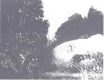
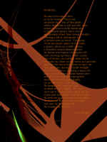

Terry Wright
Dumped
No one ever comes here
or so he hopes. There are
no paths in or out of this glade
where the grass is tall and the trees
strain to erase a white blank sky.
In my death-sleep I don't recall
my mistake other than being friendly—
offering a lift or taking pity on
a broken arm or heart. Too soon,
I'll be an empty space at the table,
a grainy photo on a milk carton,
a forsaken snack dismembered
by forest scavengers carting me off
and covering up clues. After a year
bits of bones, an earring, some teeth
will take my place as my worn out parents
pray for the worst bad news to bury me
but, perhaps, during a chilly twilight
hunters or hikers, clearing a space for
a fire, will run their warm hands over
me, move me, treat me gently
because I am valuable, fragile,
an artifact from a lost world.
No longer will I wait for him
to show his face again. He won't
turn up in chains and cuffs while he
chats and sips coffee with detectives.
He feels no guilt and no need to gloat.
He likes me better when I'm quiet
but now he thinks I stink.
No wonder he left me. |

*Based on a photograph: Dream Face, Munich
(1964) by Floris Michael Neususs from A History of Photography:
Social and Cultural Perspectives, edited by Jean-Claude
Lemagny and Andre Rouille, Cambridge University Press, 1986.

Fractal Version |
{kind=link}
{kind=link}